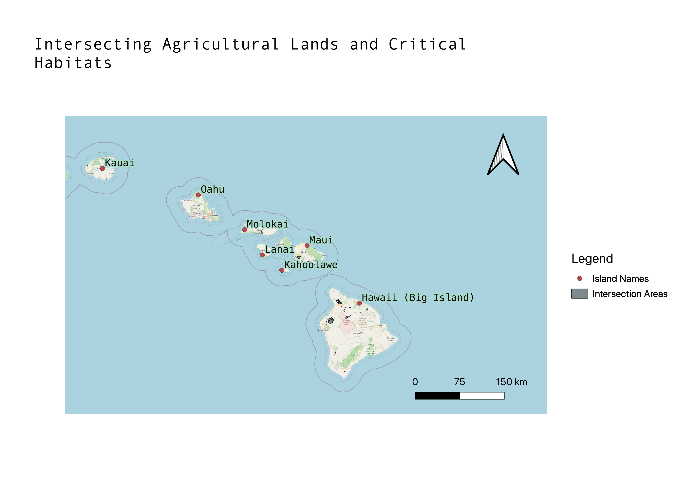
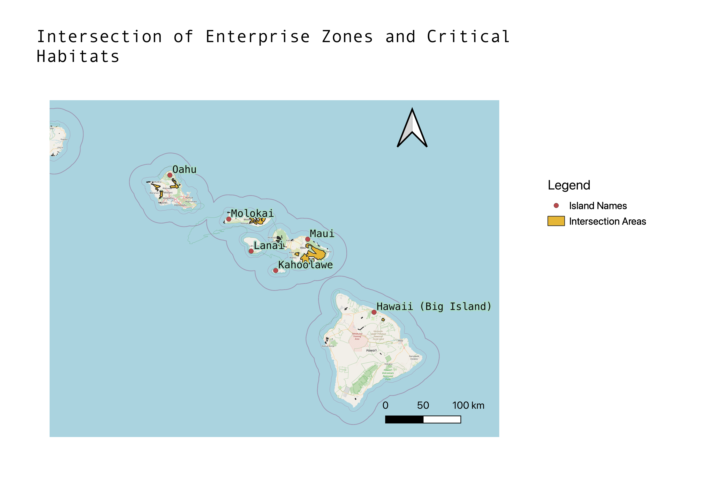
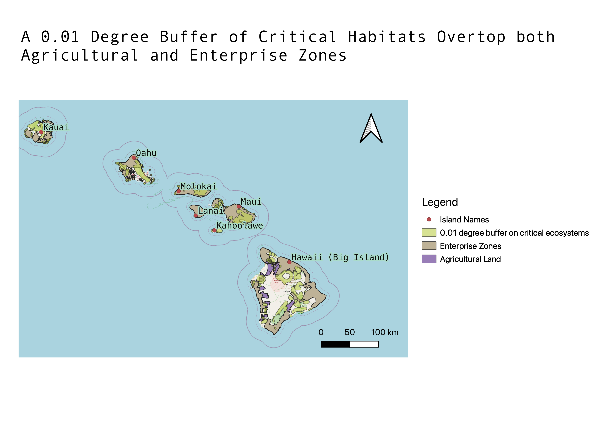

This project is an analysis comparing 'critical habitats' in the state of Hawaii to areas of current or potential development; the data used for this is agricultural land and enterprise zones. Agricultural land is land used for farming, food production, and the growth of crops. Enterprise zones are areas within a state with more poverty and less job opportunity. As a result, tax incentives and economic policies are often passed within these zones to further development, construction, and provide jobs. This means that while there may only be a certain amount of development there currently, there are incentives for the state to use funds to build and invest in those areas. Critical habitat zones are areas that necessitate protection and special management to protect fragile ecosystems or endangered species within that area. These layers of data are the foundation for the project. I compare and cross analyze the overlap of these layers to answer the question if critical habitats in Hawaii are properly protected and separated from current and potential development
This map shows the areas in Hawaii that contain habitats in critical condition. These are areas that are very important to protect from development and new infrastructure.
This map shows the agricultural land in Hawaii.

This map shows the enterprise zones in Hawaii.

This map shows the areas in Hawaii where critical habitat zones and agriculture zones overlap. The areas of both layers that did not overlap are deleted from the map and only the parts of both layers that were in the same places were kept. This shows that critical habitats and agriculture are pretty well separated, given the minimal overlap visible in the map.
The map below shows the overlap of critical habitat zones and enterprise zones. The areas of either layer with no overlap are not visible. There is more overlap with both zones in this map than in the previous. Enterprise zones do not consider critical habitats as much as developed agriculture has.
In this map, I added a buffer layer onto the critical habitat layer on a scale of a 0.01 degree buffer. I added this buffer to show how critical habitat zones overlap with enterprise zones and agricultural zones when their boundaries were extended further. There is more overlap this way, and this could be a problem if the critical habitats and ecosystems are not completely confined to the measured zones. Development in Hawaii seems to ride very closely to the areas that need to be protected, and so it could mean that the developed areas still affect the habitats. For example, through polluted air, runoff water, tourism, and more, damage could be done to nearby habitats if development is too close. The buffer was added to represent how quickly these zones can encroach on one another, and this buffer could represent how habitats can grow into developed areas or how the effects of development could extend further than the boundaries where it cuts off.
Agricultural zones are quite well separated from the critical habitat zones in Hawaii. The intersection of agriculture and habitat zones show very little data to represent any overlap, which is good news. The enterprise zones are also overall kept separate from critical habitats, but not as much. Although enterprise zones may not be doing extensive development, they may be or plan to be building more infrastructure due to political and economical incentives provided by the government to boost the economy in those areas. There is more data present in my map of intersecting enterprise zones and habitat zones than in the previous map highlighting agriculture. Enterprise zones could therefore end up encroaching on fragile ecosystems if the future, especially if heavy investments are involved. My buffer layer of the critical habitats show that very little space is left between development versus natural areas. The islands are small but big tourism hubs, and all of the maps show that between critically important natural areas and areas of development, otherwise very little land is not utilized in some way. Hopefully, companies, politicians, and the wealthy will not let the currently undeveloped zones of Hawaii suffer from any environmental damage. The boundaries on the island are drawn quite close so that every meter of land has a purpose. The buffer layer shows that, given that even a small buffer added to the critical habitat layer leads to a lot more overlaps in the map. The answer to my question of whether critical habitats are separated from development is yes. These two things are separated, but barely. With the need to protect lands and preserve endangered species, the lack of space inbetween development versus protected lands can present a danger to the environment. ***Some of this data may not be as accurate given the August fires of Hawaii, particularly for Maui data. Many areas highlighted in the map for Maui may be recovering from fire damage or classified in a new category.